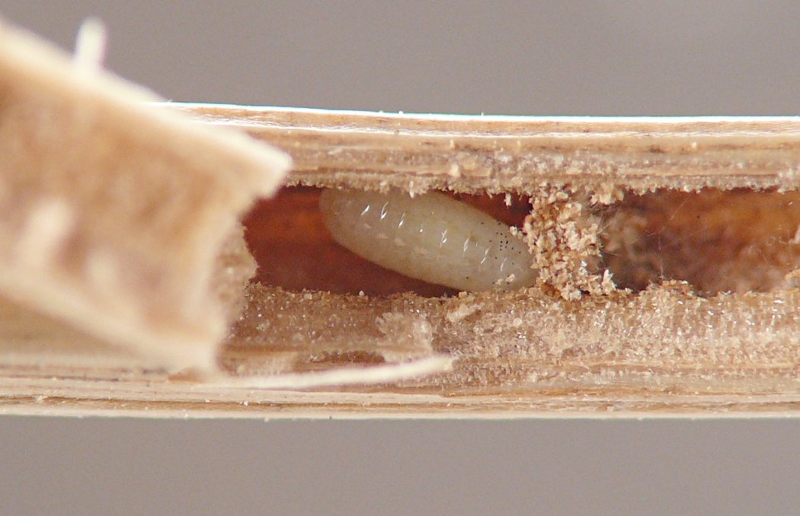
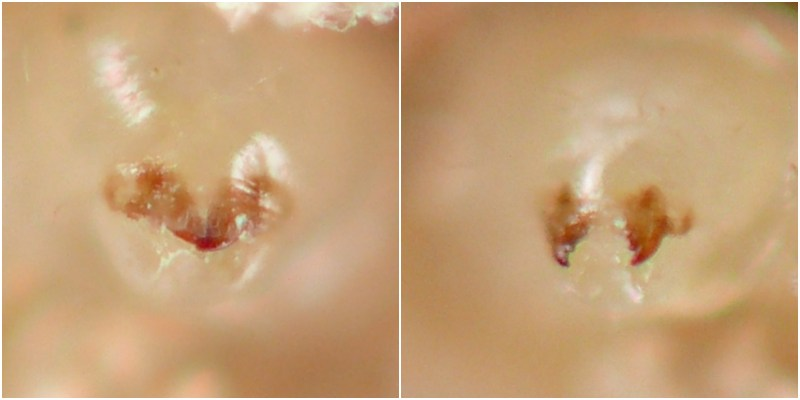
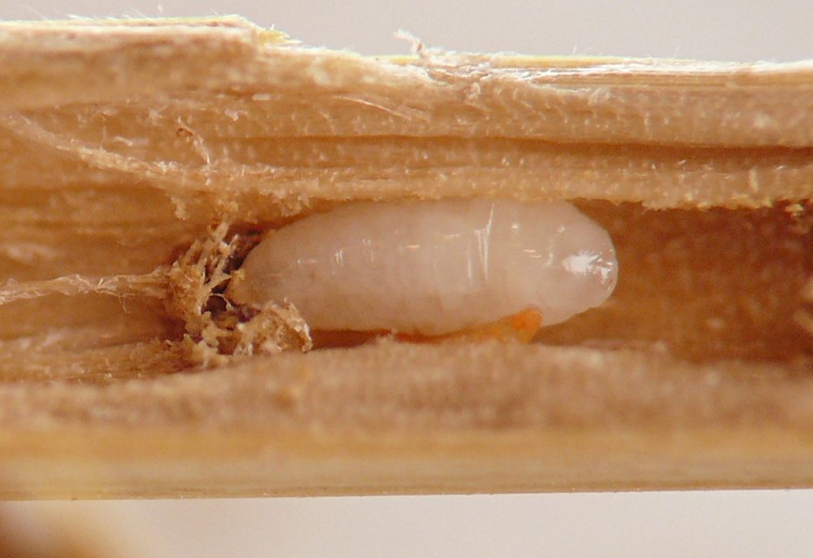
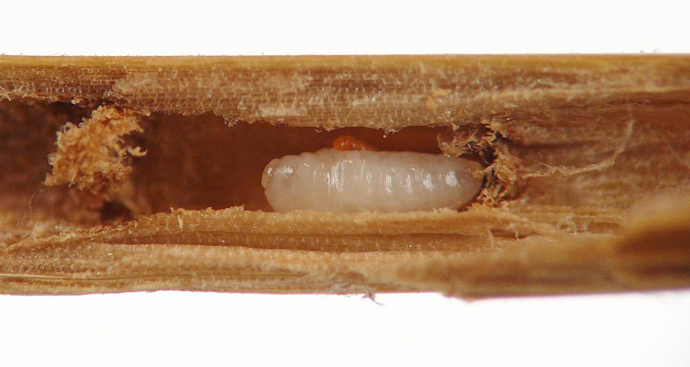
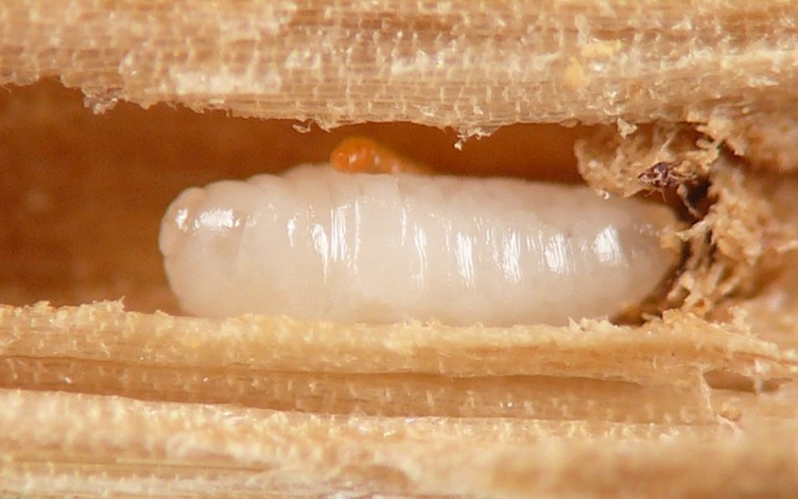
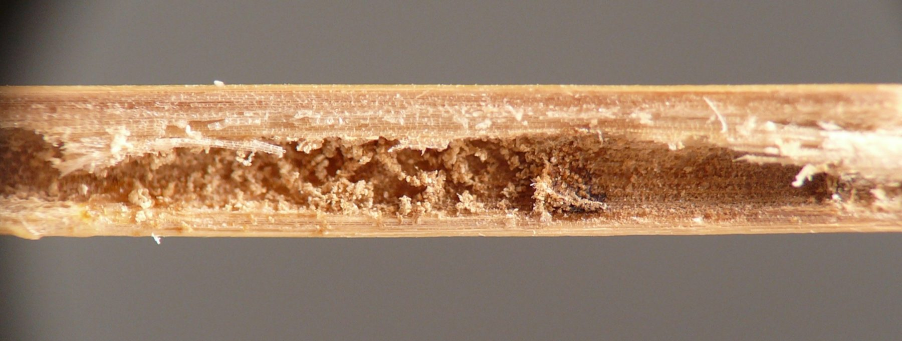
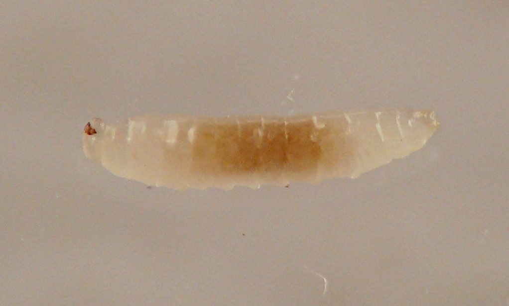

Local feeder (Hymenoptera) in stems of Dactylis
| Record no.: | 0758 |
|---|---|
| Feeding guild: | Local feeder in stem |
| Taxonomy: | Hymenoptera: cf. Eurytomidae: Tetramesa |
| Stages observed: | trace, larva |
| Distribution observed: | IA |
| Hosts in Dactylis: | D. glomerata (orchard grass) |
I located several larvae (tentatively identified as Eurytomidae based on habitat and close resemblance to confirmed eurytomids from stems of other hosts examined in the survey) in culms of orchard grass in late September. At least three of them were squat and rotund with a small, round, poorly differentiated head and paired, sharp, needle-like mandibles. These larvae dwelled in short chambers partly separated from the rest of the culm interior by partitions apparently composed of frass. A fourth larva was more slender and narrow and I found it in a portion of culm roughly 10-20 mm in length that contained coarse grains of dry frass.
One of the more rotund larvae occurred adjacent to a bright orange cecidomyiid larva that crawled actively and skillfully as I examined the culm interior. I wrote: "The cecidomyiid larva was originally located very close to the eurytomid larva when I split open the stem, and by the time I got to photographing it the larva was actually crawling on the eurytomid larva! Whatever they are, these cecidomyiid larvae [in Dactylis culms] are good crawlers."
Tetramesa longula has been previously associated with Dactylis (Krombein et al. 1979).

 Prev
Prev
{kind=link}
{kind=link}

{kind=link}

{kind=link}

{kind=link}

{kind=link}

{kind=link}

- Krombein, K.V., Hurd, Jr., P.D., Smith, D.R., and B.D. Burks. 1979. Catalog of Hymenoptera in America north of Mexico. Smithsonian Institution Press.[return to in-text citation]
Page created: March 16, 2026. Last update: none